Clínica Dental de referencia en Barcelona
Morelló Clínica Dental, fundada en el año 1982 por el Dr. Joan Morelló Cubells.
Somos una clínica familiar que ha tenido siempre como objetivo principal la profesionalidad y la seriedad con los pacientes, lo que nos ha hecho crecer como una clínica de referencia en Barcelona.
Sobre nosotros
Más información sobre la clínicaEl equipo
Nuestros doctoresCita online
Pida una cita
¿Está listo para realizar una consulta?
Su tratamiento será realizado por nuestro equipo de especialistas. ¡Pida una cita previa ahora!
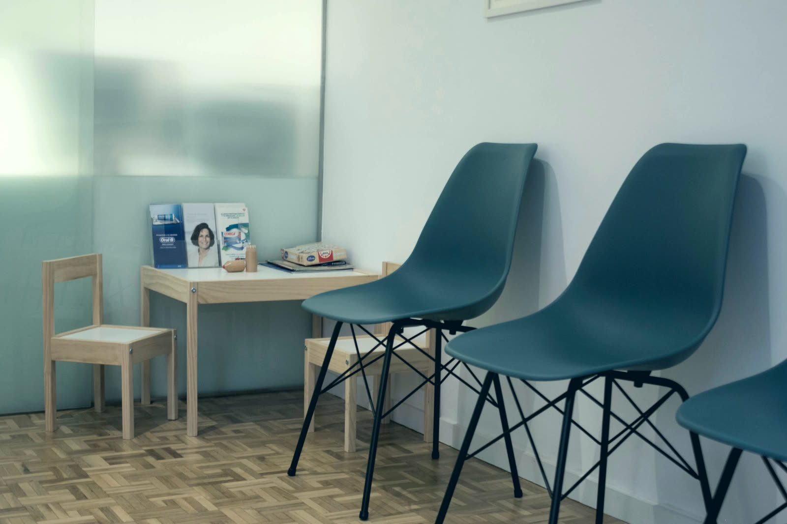
El cuidado de hoy, la sonrisa de mañana
Más información sobre odontopediatría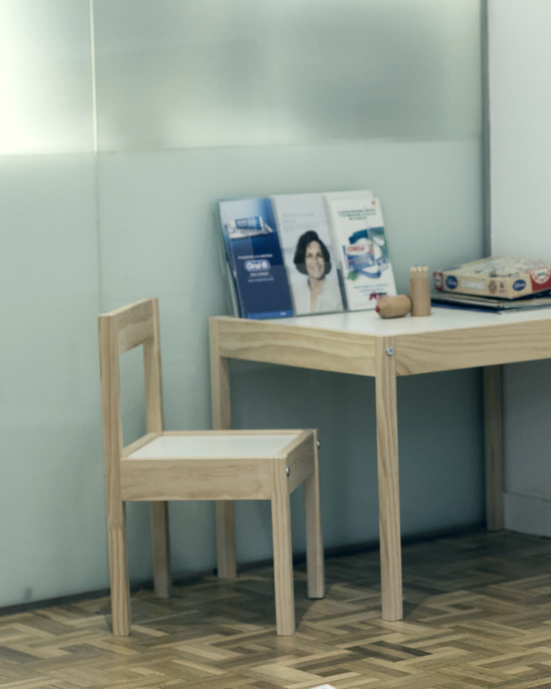
Somos Especialistas
En Morelló Clínica Dental tenemos una verdadera devoción por la salud bucodental. Nuestros más de 30 años en la clínica de Barcelona lo demuestran.
-
Ortodoncia
En Morelló contamos con los tratamientos de ortodoncia más demandados y con mejores resultados. Ortodoncia lingual, brackets estéticos, cerámicos y ortodoncia invisible Invisalign®.
Ver más sobre ortodoncia -
Estética dental
La solución a problemas relacionados con la salud bucal y la armonía estética de la boca en su totalidad. La importancia de lucir una bonita sonrisa natural.
Ver más sobre estética dental -
Odontopediatría
La odontopediatría, también llamada odontología infantil, es la encargada de tratar los dientes de los niños, desde los primeros dientes temporales hasta que finaliza el periodo de recambio dental.
Ver más sobre odontopediatría
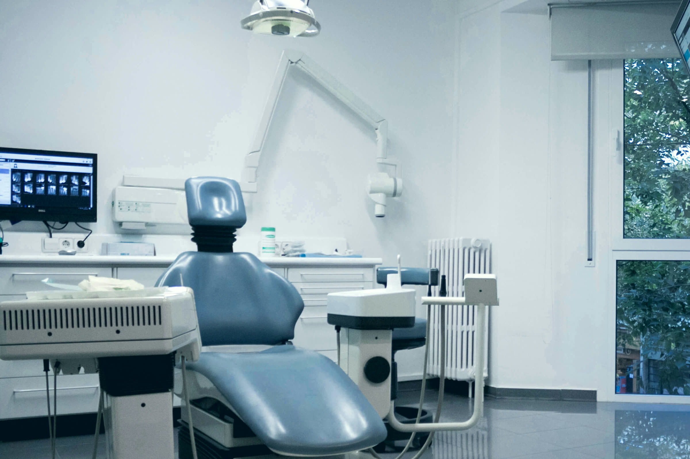
Ortodoncia invisible
La clara alternativa a los brackets
Más información sobre ortodoncia invisibleNuestro Equipo
Conocimientos, experiencia, cercanía
Entre a conocernos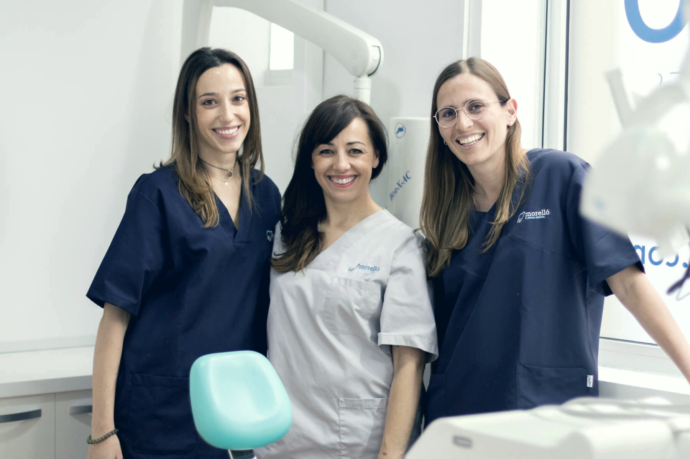
Fundador
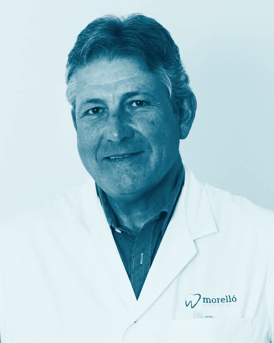
Dr. Joan Morelló
Fundador
Especialistas
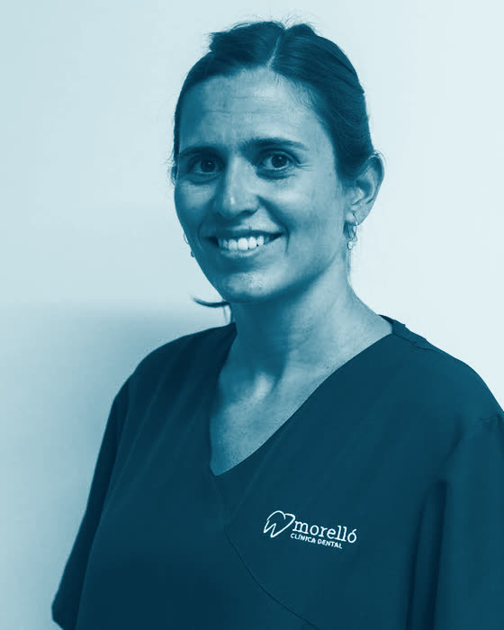
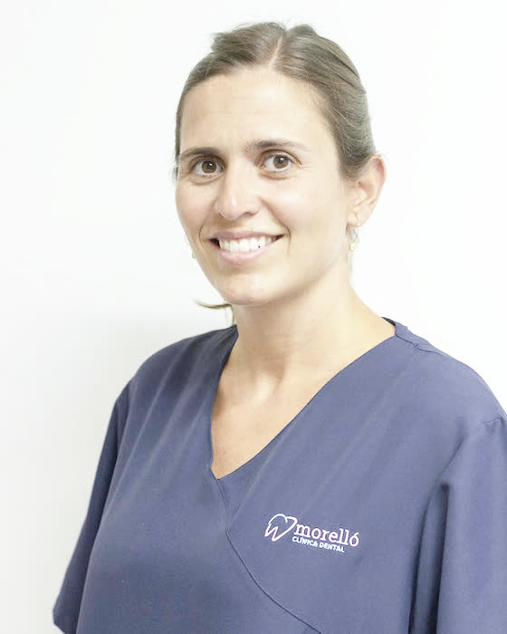
Dra. Carmen Morelló
Odontóloga
Núm. de colegiada 5392
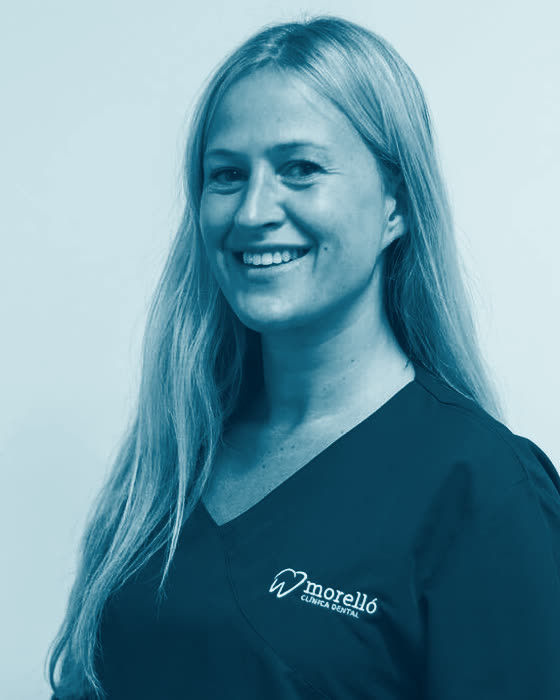
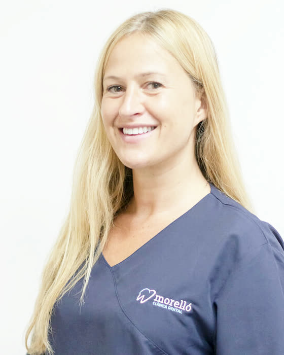
Dra. María Nart
Especialista en ortodoncia y ortopedia dentofacial
Núm. de colegiada 7186
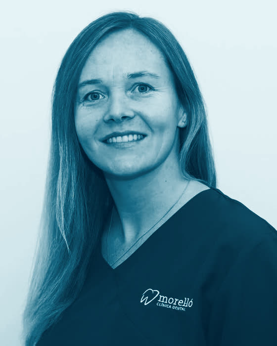
Dra. María Estívalez
Odontóloga
Núm. de colegiada 5374
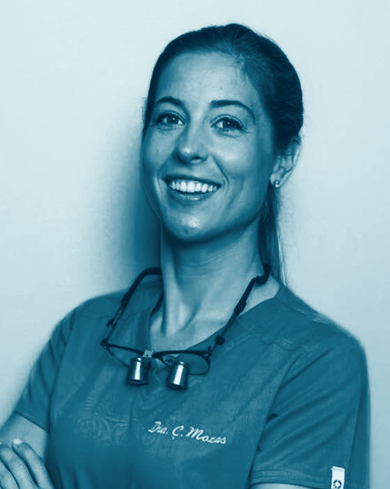
Dra. Carla Mozas
Especialista en Periodoncia
Núm. de colegiada 01000355
Higienistas
Eli
Higienista dental
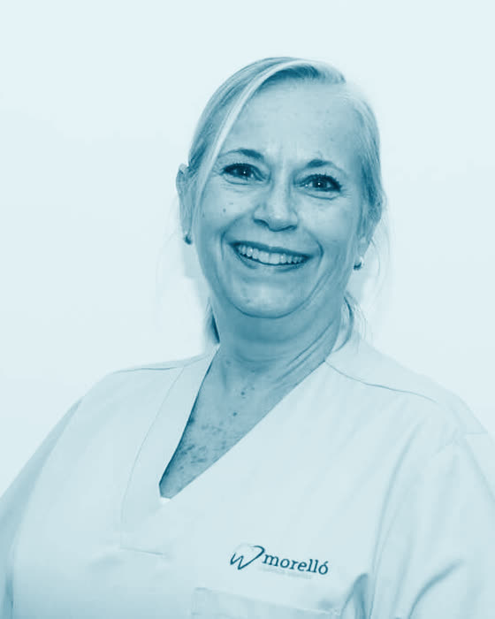
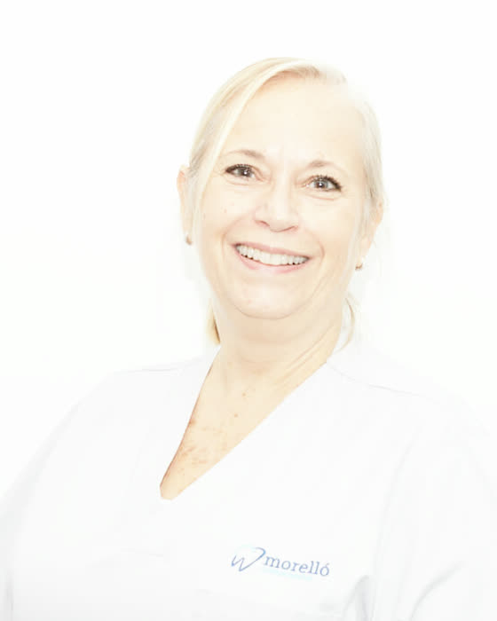
Gemma
Higienista dental
¿Dónde estamos?
Morelló Clínica Dental Barcelona
Carrer de Muntaner, 571 - 2ºC, 08022 Barcelona (abre Google Maps)Llame ahora
934 182 129Horario de la clínica
- Lunes10h a 14h – 16h a 20h
- Martes10h a 14h
- Miércoles9h a 14h – 16h a 20h
- Jueves16h a 20h
- Viernes10h a 14h
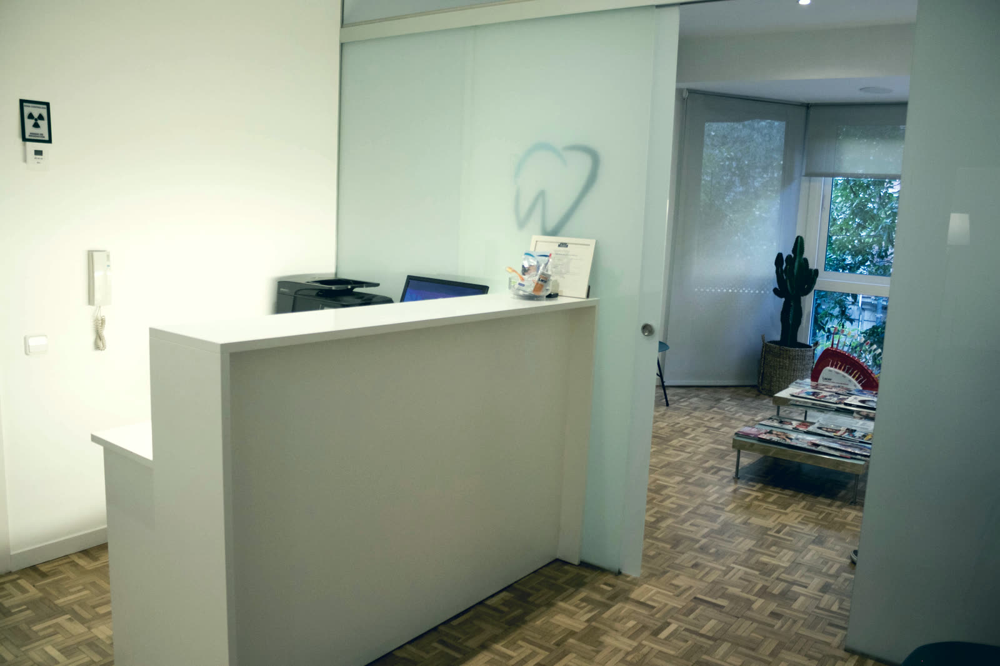
Solicite Información
Rellene el siguiente formulario o llame al teléfono +34 934 182 129 donde le atenderemos personalmente para resolver todas sus dudas. Además, podrá solicitar una primera visita.